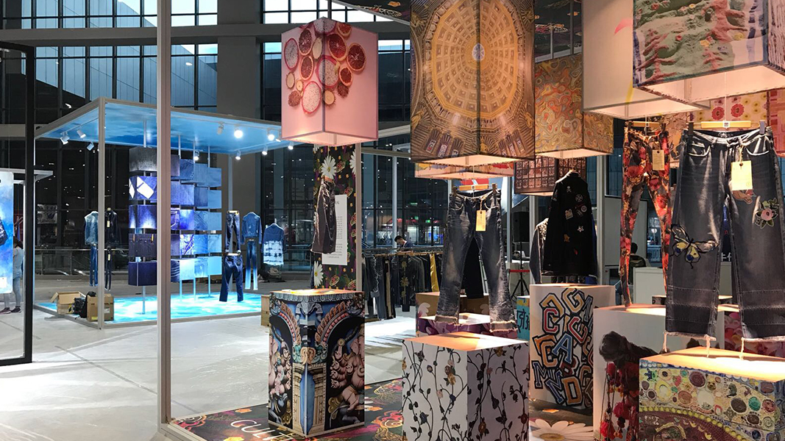
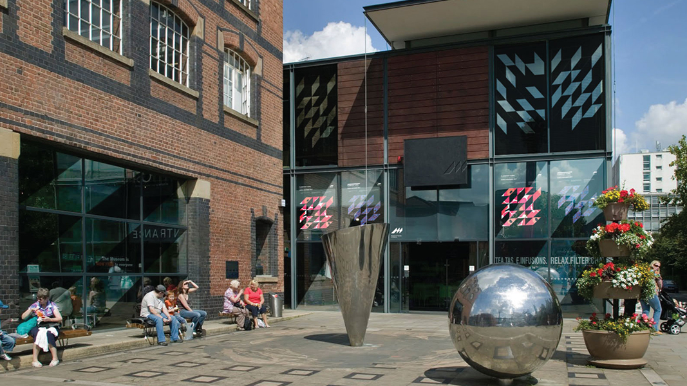
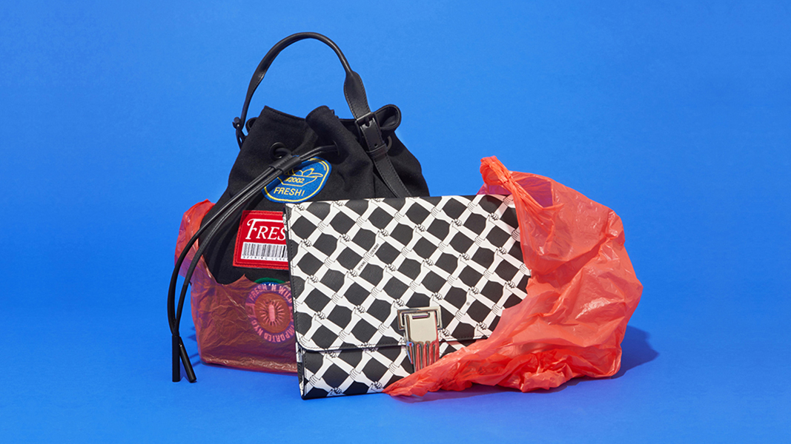
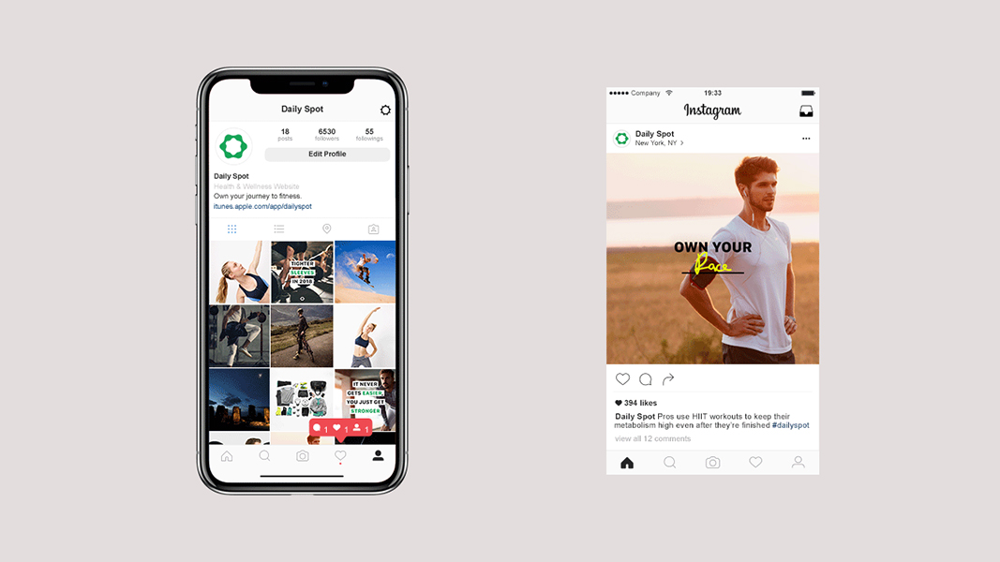
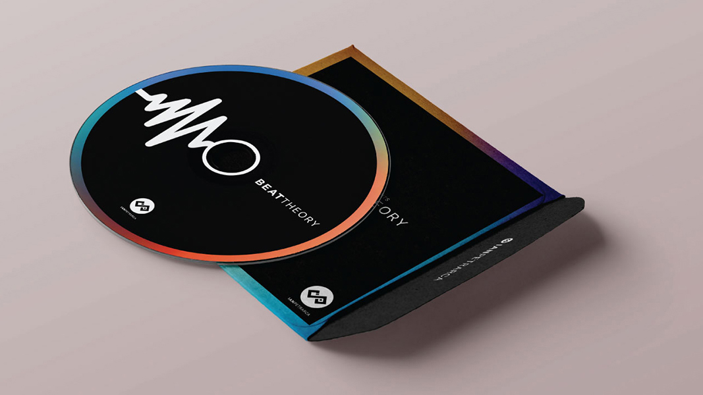

PROJECTS
ABOUT ME
Byron Chow is a multidisciplinary designer born and raised in New York City. Heavily inspired by the hectic and upbeat city streets, Byron works on ways to creatively inject bright colors & experimental methods of markmaking into his practice.
↪
01. Stills // Art Direction

↪
02. Intertextile Expo // Surface Design

↪
03. Museum of American Textiles // Rebranding

↪
04. Textile Design // Digital Illustration

↪
05. Daily Spot // Visual Consulting
↪
06. Cyren Project // Illustration

↪
07. Ian Petrarca Rebrand // Rebranding
↪
08. Experimental Book Design
© Byron Chow 2018